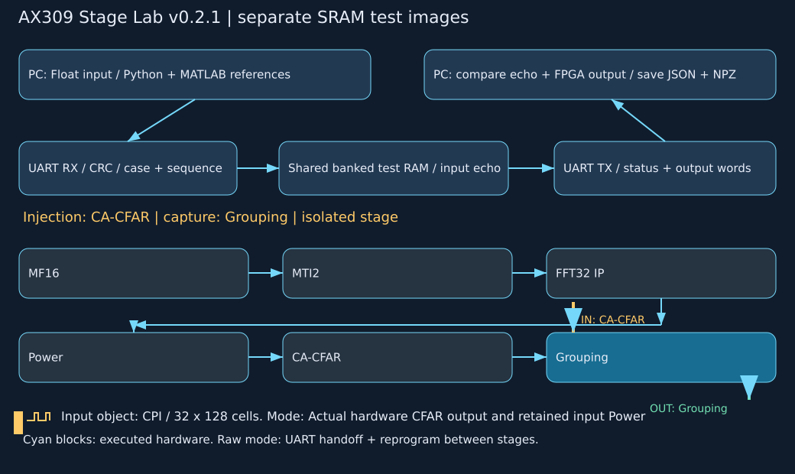
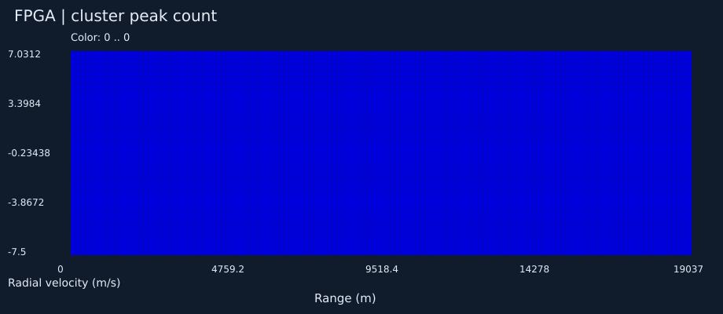
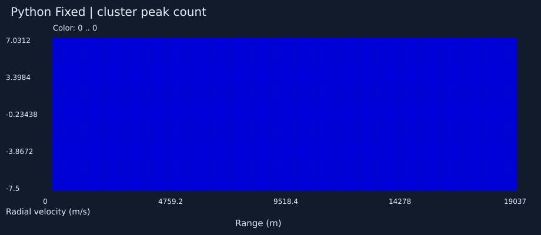
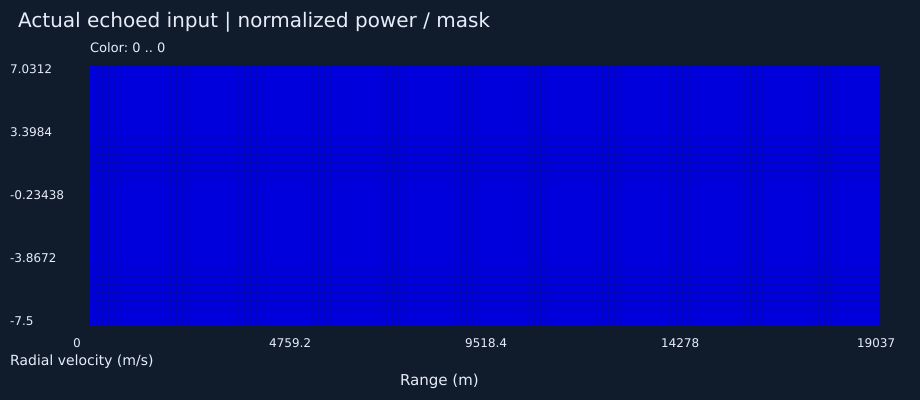

0 هدف از 0 هدف با کلاسترها تطبیق یافت؛ 0 کلاستر بدون تطبیق باقی ماند.



| منبع | شناسه | سلول برد | bin داپلر | سرعت m/s | سلولهای کلاستر |
|---|
| مرجع | معیار | مقدار |
|---|---|---|
| Python Float | hardware_clusters | 0 |
| Python Float | reference_clusters | 0 |
| Python Float | compared_fields | ['record_id', 'range_bin', 'doppler_bin', 'signed_doppler_bin', 'cluster_cells'] |
| Python Float | common_peak_coordinates | 0 |
| Python Float | hardware_only_peaks | [] |
| Python Float | reference_only_peaks | [] |
| Python Float | record_signatures_exact | 1 |
| Python Fixed | hardware_clusters | 0 |
| Python Fixed | reference_clusters | 0 |
| Python Fixed | compared_fields | ['record_id', 'range_bin', 'doppler_bin', 'signed_doppler_bin', 'cluster_cells', 'power_stored_integer', 'tie_flag', 'max_equal_power_cells'] |
| Python Fixed | common_peak_coordinates | 0 |
| Python Fixed | hardware_only_peaks | [] |
| Python Fixed | reference_only_peaks | [] |
| Python Fixed | record_signatures_exact | 1 |
| MATLAB Fixed | hardware_clusters | 0 |
| MATLAB Fixed | reference_clusters | 0 |
| MATLAB Fixed | compared_fields | ['record_id', 'range_bin', 'doppler_bin', 'signed_doppler_bin', 'cluster_cells', 'power_stored_integer', 'tie_flag', 'max_equal_power_cells'] |
| MATLAB Fixed | common_peak_coordinates | 0 |
| MATLAB Fixed | hardware_only_peaks | [] |
| MATLAB Fixed | reference_only_peaks | [] |
| MATLAB Fixed | record_signatures_exact | 1 |